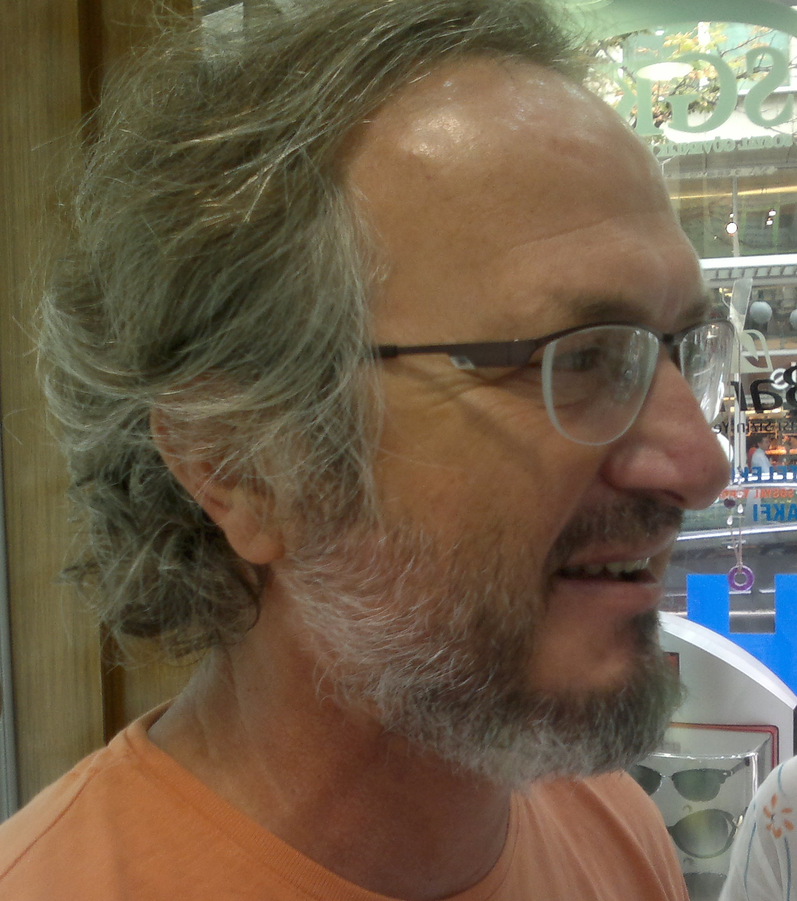

Cem Bozşahin

Cognitive Science Department
Informatics Institute,
METU
my stage-level predicates (listed more or less from most recent to least):
RIP: Nicholas Viktor Findler 1930-2013.
My phd advisor, from ASU.
Leonard (Aryeh) Faltz 1940-2020.
(teacher, mentor)
Esen Özkarahan 1940-1999 (teacher, mentor)
| Cognitive Science Department | Bilişsel Bilimler Bölümü |
| Informatics Institute | Enformatik Enstitüsü |
| Middle East Technical University | Ortadoğu Teknik Üniversitesi |
| 06800 Ankara, Türkiye | |
| office: +90 (312) 210 7758 | fax: +90 (312) 210 3745 |
| general office: +90 (312) 210 3742/3741 | for messages, inquiries |